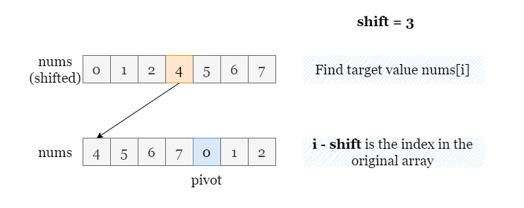

Define the pivot index as representing the smallest element in nums.
In a rotated sorted array, the pivot value signifies where the rotation occurs. It partitions the array (of length
nn) into two sorted portions nums[0 ~ pivot
- 1] and nums[pivot ~ n - 1].
If you are not familiar with binary search, please refer to our explore cards Binary Search Explore Card. We will focus on the usage in this article and not the underlying principles or implementation details.
To pinpoint the pivot value, we can employ a modified binary search algorithm and find the leftmost element that is
smaller than or equal to the last element in nums.
After identifying the middle element in the searching space [left ~ right], we compare
nums[mid] with nums[-1].
nums[mid] > nums[-1], it suggests that the pivot value lies on the right of
nums[mid]. We will then proceed with the right half of the search space, which is [mid + 1 ~
right].
nums[mid] or it's situated to the left of nums[mid], we
continue with the left half of the searching space, which is [left ~ mid - 1].
By determining the pivot value, we set the boundaries for our subsequent binary searches. Once we have the pivot value, we can execute two binary searches on each half of the array to locate the target element.
Note: the typical way to calculate
midis(left + right) / 2. However, a safer way isleft + (right - left) / 2. The two equations are equivalent, but the second one is safer because it guarantees no number larger thanrightis ever stored. In the first equation, ifleft + rightis huge, then it could end up overflowing.
Perform a binary search to locate the pivot element by initializing the boundaries of the searching space as
left = 0 and right = n - 1. While left < right:
mid = left + (right - left) // 2.nums[mid] > nums[n - 1], this suggests that pivot is located to the
right of mid, hence we set left = mid + 1. Otherwise, pivot could
be either at mid or to the left of mid, in which case we should set right
= mid - 1.
Upon completion of the binary search, we have the pivot index denoted as pivot = left.
nums consists of two sorted subarrays, nums[0 ~ left - 1] and nums[left ~ n -
1].
Perform a binary search over nums[0 ~ left - 1] for target. If target
is within this subarray, return its index.
Otherwise, perform a binary search over nums[left ~ n - 1] for target. If target
is within this subarray, return its index. Otherwise, return -1.
Java
class Solution {
public int search(int[] nums, int target) {
int n = nums.length;
int left = 0, right = n - 1;
// Find the index of the pivot element (the smallest element)
while (left <= right) {
int mid = (left + right) / 2;
if (nums[mid] > nums[n - 1]) {
left = mid + 1;
} else {
right = mid - 1;
}
}
// Binary search over elements on the pivot element's left
int answer = binarySearch(nums, 0, left - 1, target);
if (answer != -1) {
return answer;
}
// Binary search over elements on the pivot element's right
return binarySearch(nums, left, n - 1, target);
}
// Binary search over an inclusive range [left_boundary ~ right_boundary]
private int binarySearch(int[] nums, int leftBoundary, int rightBoundary, int target) {
int left = leftBoundary, right = rightBoundary;
while (left <= right) {
int mid = (left + right) / 2;
if (nums[mid] == target) {
return mid;
} else if (nums[mid] > target) {
right = mid - 1;
} else {
left = mid + 1;
}
}
return -1;
}
}
Python3
class Solution:
def search(self, nums: List[int], target: int) -> int:
n = len(nums)
left, right = 0, n - 1
# Find the index of the pivot element (the smallest element)
while left <= right:
mid = (left + right) // 2
if nums[mid] > nums[-1]:
left = mid + 1
else:
right = mid - 1
# Binary search over an inclusive range [left_boundary ~ right_boundary]
def binarySearch(left_boundary, right_boundary, target):
left, right = left_boundary, right_boundary
while left <= right:
mid = (left + right) // 2
if nums[mid] == target:
return mid
elif nums[mid] > target:
right = mid - 1
else:
left = mid + 1
return -1
# Binary search over elements on the pivot element's left
if (answer := binarySearch(0, left - 1, target)) != -1:
return answer
# Binary search over elements on the pivot element's right
return binarySearch(left, n - 1, target)
Let nn
be the length of nums.
Time complexity: O(logn)O(\log n)
pivot, and at most 2 binary searches to
find target. Each binary search takes O(logn)O(\log n) time.
Space complexity: O(1)O(1)
left, right and mid,
which takes O(1)O(1) space.
The array we're working with has been rotated by a certain number of steps, which means we can't apply a regular binary search to the modified array. However, if we can revert this array to its original sorted form, then a conventional binary search becomes a viable approach.
Our key task is to locate pivot, the index of the smallest value in nums. Notably, nums[pivot]
would have been at index 0 in the unrotated, original array. Hence, if we were to rotate it to the right by n
- pivot steps (taking the modulus of n into account), it would return to its original
position, index 0.
Applying the same transformation to every element enables us to revert the rotated array back to its original, sorted form.
At this point, we can perform a conventional binary search to locate the target. Let's assume that nums[i] =
target. Remembering that we had to shift every element to the right by n - pivot steps to reach
the sorted version of nums, we now need to shift the index in the sorted nums to the left by n - pivot
steps to find its corresponding index, i, in the original nums. This gives us i - (n -
pivot) (taking the modulus of n into account).

Crucially, there's no need to actually create the sorted version of nums from the original
nums. We can simply represent the sorted nums by shifting the indices.
Perform a binary search to locate the pivot element by initializing the boundaries of the searching space as
left = 0 and right = n - 1. While left < right:
mid = left + (right - left) // 2.nums[mid] > nums[n - 1], this suggests that pivot is located to the
right of mid, hence we set left = mid + 1. Otherwise, pivot could
be either at mid or to the left of mid, in which case we should set right
= mid - 1.
Upon completion of the binary search, we have the pivot index denoted as pivot = left.
Set the boundaries of the search space as (pivot + shift) % n and (pivot - 1 + shift) %
n.
While left < right, we get the middle index mid = (left + right) // 2, and
compare nums[(mid - shift + n) % n] with target.
nums[(mid - shift + n) % n] is equal to target, return mid - shift +
nnums[(mid - shift + n) % n] > target, continue with the left half by setting right
as mid - 1.
nums[(mid - shift + n) % n] < target, continue with the right half by setting left
as mid + 1.
Return -1 once the binary search is complete.
Java
class Solution {
public int search(int[] nums, int target) {
int n = nums.length;
int left = 0, right = n - 1;
// Find the index of the pivot element (the smallest element)
while (left <= right) {
int mid = (left + right) / 2;
if (nums[mid] > nums[n - 1]) {
left = mid + 1;
} else {
right = mid - 1;
}
}
return shiftedBinarySearch(nums, left, target);
}
// Shift elements in a circular manner, with the pivot element at index 0.
// Then perform a regular binary search
private int shiftedBinarySearch(int[] nums, int pivot, int target) {
int n = nums.length;
int shift = n - pivot;
int left = (pivot + shift) % n;
int right = (pivot - 1 + shift) % n;
while (left <= right) {
int mid = (left + right) / 2;
if (nums[(mid - shift + n) % n] == target) {
return (mid - shift + n) % n;
} else if (nums[(mid - shift + n) % n] > target) {
right = mid - 1;
} else {
left = mid + 1;
}
}
return -1;
}
}
Python3
class Solution:
def search(self, nums: List[int], target: int) -> int:
n = len(nums)
left, right = 0, n - 1
# Find the index of the pivot element (the smallest element)
while left <= right:
mid = (left + right) // 2
if nums[mid] > nums[-1]:
left = mid + 1
else:
right = mid - 1
# Shift elements in circular manner, with the pivot element at index 0.
# Then perform a regular binary search
def shiftedBinarySearch(pivot_index, target):
shift = n - pivot_index
left, right = (pivot_index + shift) % n, (pivot_index - 1 + shift) % n
while left <= right:
mid = (left + right) // 2
if nums[(mid - shift) % n] == target:
return (mid - shift) % n
elif nums[(mid - shift) % n] > target:
right = mid - 1
else:
left = mid + 1
return -1
return shiftedBinarySearch(left, target)
Let nn
be the length of nums.
Time complexity: O(logn)O(\log n)
pivot and one binary search over the
shifted indices to find target. Each binary search takes O(logn)O(\log n) time.
Space complexity: O(1)O(1)
left, right mid and
shift, which takes O(1)O(1) space.
The two preceding approaches both comprise two steps:
However, we can perform these two steps within a single binary search.
Let's take a step back and consider a regular binary search. Why are we able to confidently discard half of the array
after comparing target with the middle value nums[mid]? The reason is that both halves of
the array are sorted. Hence, if target is less than the middle value, it's assured to be smaller than
every value in the right half. If target is larger than the middle value, it's guaranteed to be larger
than every value in the left half. Therefore, we can safely discard one half of nums in either case.
However, a rotated sorted array may not possess this characteristic – we can't determine whether target
is definitively not in the array just by comparing boundary values.
If we cut a subarray nums[left ~ right] by the index mid. We split this subarray into 3
parts:
nums[left ~ mid - 1]nums[mid].nums[mid + 1, right].It is important to note that there is at most one rotated sorted array in the two subarrays, which means that there is at least one sorted array for comparison.
Therefore, we can compare target with the sorted half to decide which subarray to retain for the next
round.
It is straightforward to determine if a sorted array
A[l ~ r]could possibly containtarget, we can simply comparetargetwith two boundary valuesA[l]andA[r].
- If
A[l] <= target <= A[r], thenA[l ~ r]might containtarget, which needs to be verified by binary search, we will continue with this subarray.
- Otherwise,
targetis guaranteed to not be inA[l ~ r], and there is no need to search over this array, we will continue with the other subarray.
To sum up, there are 3 possible cases after comparing target with nums[mid]:
Case 1. If nums[mid] = target, which denotes that we have found target, return
mid as its index.
Case 2. If nums[mid] >= nums[left]. It implies that the left subarray nums[left ~ mid]
is sorted. We can determine whether to proceed with this subarray by comparing target with the boundary
elements:
nums[left] <= target and target < nums[mid], it suggests that the sorted left
half might include target while the other half does not contain target. Consequently,
we focus on the left half for further steps.
target, and we will move on to the right
half.
Case 3. If nums[mid] < nums[left], it implies that the left subarray is rotated and the right
subarray nums[mid ~ right] is sorted. Therefore, we can determine whether to proceed with the right
subarray by comparing the target with its boundary elements:
nums[mid] < target and target < nums[right], it implies that the sorted right
half might contain target. As a result, we will move on with the right half.
target, and we will move on to the left
half.
Initialize the boundaries of the searching space as left = 0 and right = n - 1.
While left <= right, do the followings:
Locate the middle index as mid = left + (right - left) // 2. Compare
nums[mid] with target. If target = nums[mid], return mid.
Otherwise:
If nums[mid] >= nums[left], the left half is sorted.
target >= nums[left] and target < nums[mid], target
might be in the left half. Continue with the left half by setting right = mid - 1.
left = mid + 1.Repeat step 2.
If nums[mid] < nums[left], the right half is sorted.
target <= nums[left] and target > nums[mid], target
might be in the right half. Continue with the right half by setting left = mid + 1.
right = mid + 1.Return -1 when the search is complete.
Java
class Solution {
public int search(int[] nums, int target) {
int n = nums.length;
int left = 0, right = n - 1;
while (left <= right) {
int mid = left + (right - left) / 2;
// Case 1: find target
if (nums[mid] == target) {
return mid;
}
// Case 2: subarray on mid's left is sorted
else if (nums[mid] >= nums[left]) {
if (target >= nums[left] && target < nums[mid]) {
right = mid - 1;
} else {
left = mid + 1;
}
}
// Case 3: subarray on mid's right is sorted
else {
if (target <= nums[right] && target > nums[mid]) {
left = mid + 1;
} else {
right = mid - 1;
}
}
}
return -1;
}
}
Python3
class Solution:
def search(self, nums: List[int], target: int) -> int:
n = len(nums)
left, right = 0, n - 1
while left <= right:
mid = left + (right - left) // 2
# Case 1: find target
if nums[mid] == target:
return mid
# Case 2: subarray on mid's left is sorted
elif nums[mid] >= nums[left]:
if target >= nums[left] and target < nums[mid]:
right = mid - 1
else:
left = mid + 1
# Case 3: subarray on mid's right is sorted.
else:
if target <= nums[right] and target > nums[mid]:
left = mid + 1
else:
right = mid - 1
return -1
Let nn
be the length of nums.
Time complexity: O(logn)O(\log n)
nums.Space complexity: O(1)O(1)
left, right and mid,
which takes O(1)O(1) space.